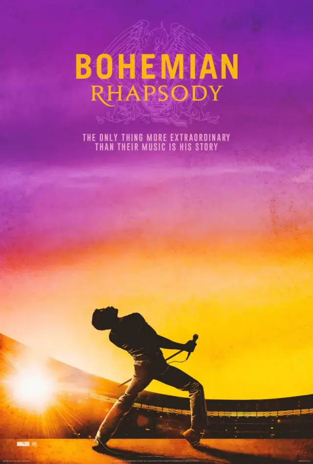

Indicado ao Oscar de Melhor Filme em 2019.

Bohemian Rhapsody conta a história de Freddie Mercury, vocalista da banda Queen, desde o início de sua carreira até o sucesso internacional alcançado pelo grupo.
O filme acompanha a formação da banda, a criação de algumas de suas músicas mais conhecidas e os desafios enfrentados por Freddie em sua vida pessoal e profissional.
Rami Malek venceu o Oscar de Melhor Ator por sua interpretação de Freddie Mercury. O filme também venceu os prêmios de Melhor Edição, Melhor Edição de Som e Melhor Mixagem de Som.